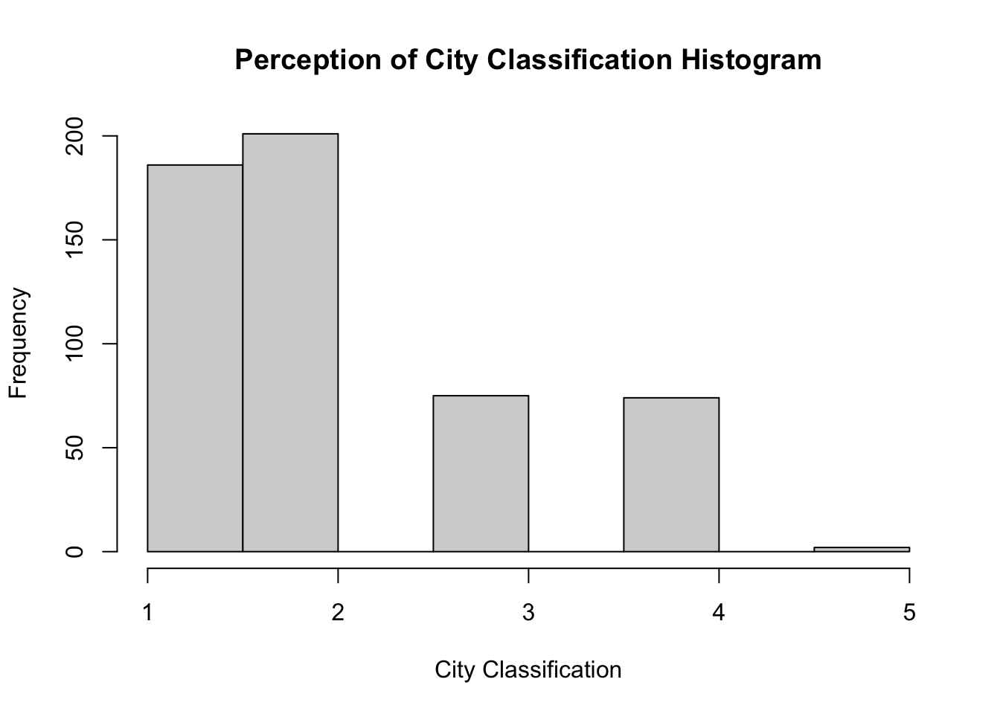

![]()

Your Political Network May Be Physically Defined - Does The Built Environment Shape Who You Discuss Politics With?
In Progress
Seminar Paper
Fall 2024
Abstract
Cross-cutting relationships are shown to reduce affective polarization and increase tolerance for different perspectives. Evidence points to the workplace as an effective social setting to foster these relationships. However, America has grown increasingly sorted along political lines across social, geographical, and lifestyle dimensions. Further, the Covid-19 pandemic has upended much of the traditional workplace dynamics. These developments have re-contextualized questions of where else cross-cutting relationships might occur and to what degree. I argue the design of the built environment can encourage greater stochastic interaction between partisans and increase heterogeneity in an indvidual’s political network. Using data from a 2018 module in the Harvard Cooperative Election Study (CES), I estimate the effect of population density on political heterogeneity in an individual’s network using a logistic regression. I find population density has no effect on the heterogeneity of an individual’s political network. While the results do not support my theory, operationalization of the concepts is likely misspecified leading to inconclusve results. Further research with more accurate data is planned.
Keywords
Built Environment, Network, Cross-cutting Relationships
Introduction
Democracy requires meaningful interaction between people (Putnam 1994). If people of opposite perspectives do not interact, out-group resentment increases and further dampens the information people are exposed to through other individual’s perspectives (Mutz 2006).
Despite normative concerns over this phenomenon, Republicans and Democrats have grown considerably polarized in the 21st century, leading to partisans sorting into social, geographical, and lifestyle bubbles (Abrams and Fiorina 2012; Enos 2014; Frake, Hurst, and Kagan 2024; Iyengar, Sood, and Lelkes 2012). Historically, partisans interacted in commonplace at churches or through group memberships (Putnam 2000). As the interaction between partisans dwindled, the workplace was realized as a powerful social context where partisans could interact and share perspectives (Mutz and Mondak 2006). These cross-cutting relationships that were formed increased exposure to differing political views and perspectives, fostering greater political tolerance (Mutz and Mondak 2006).
However, with continued growth of partisan sorting and the Covid-19 pandemic, the workplace’s power as a cross-cutting facilitator is questionable. Further, if partisans are sorting at a greater level into different lifestyles, it calls into question if and where cross-cutting relationships can form in the modern political environment. To answer this question, I theorize the design of the built environment as an aggregate level contextual feature, can shape the prevalence of cross-cutting relationships.
The design of the built environment shapes the nature and frequency of social interactions (Jacobs 1992; Nathan 2023) . How it is designed can encourage engagement with strangers; however, it can equally deter public social engagement. While considerable evidence from the urban planning and public health literature have shown the different ways physical context can shape human behavior, the political science literature has only seldom engaged with its’ effect on political participation, with very little work dedicated to studying its’ effect on political networks (Finlay et al. 2022). Given this, I ask, does the design of the built environment influence the heterogeneity of an individual’s political network?
Using a module from the 2018 Harvard Cooperative Election Study (CES), I use a logistic regression to estimate the effect of the built environment, as operationalized by population density, on the heterogeneity of an individual’s political network.
This paper proceeds by first describing how cross-cutting relationships operate and how they might be influenced by the design of the built environment. I then detail the data source and provide justification for modeling decisions. I provide a logistic regression model at different specifications and find no statistically significant effect between population density and network heterogeneity. Finally, the paper ends with an evaluation of the results and discussion about future research.
Cross-Cutting Relationships and the Built Environment
Interactions between Americans are becoming increasingly defined by political identity. Americans are affectively polarized and uncivil Mason (2018). Partisans interact with other co-partisans, filtering into partisan bubbles geographically and socially (Brown and Enos 2021; Iyengar and Westwood 2015; Rogers 2022). Democrats increasingly interact with Democrats, Republicans increasingly interact with Republicans; forming echo chambers. Because of greater partisan homophily, partisans are typically exposed to extreme out-group characterizations through media, reinforcing an in/outgroup tribalism (McConnell et al. 2018; Mutz 2006). This development poses normative concerns for democracy. A healthy democracy requires meaningful interactions between people (Putnam 1994).
Evidence point towards cross-cutting relationships ability to mitigate this phenomenon (Mutz 2001). Exposure to the “other side” can decrease affective attitudes and serve to politically inform individuals (Mutz 2006; Mutz and Mondak 2006). Historically, these types of relationships occurred in churches, volunteer groups, or even bowling leagues (Putnam 2000). However, the decline of social capital in modern America has led to other theories about where these relationships might occur. Mutz and Mondak (2006) argue these relationships are most salient in the workplace. Cross-cutting relationships in the workplace increase people’s knowledge
Despite evidence in support of cross-cutting relationships via the workplace, continued polarization and the Covid-19 pandemic cast doubt on the workplace’s current role in facilitating these relationships. Partisan sorting has emerged even in the jobs and careers people pursue (Frake, Hurst, and Kagan 2024). Workplace cross-cutting relationships only work if they are not also sorted. Further, the Covid-19 pandemic changed how people interact with coworkers. The rise of remote/hybrid work options reduces the ‘chance’ interactions needed to foster cross-cutting relationships that were a critical aspect of the workplaces’ power in fostering these relationships.
If partisans are sorting geographically, socially, and occupationally, where can cross-cutting relationships occur in today’s society? One potential solution may lie in the aggregate, the design of people’s communities and neighborhood. The ‘built environment’ represents the spatial layout of a given area, and the social resources embedded within it (Nathan 2023). How communities are designed and arranged structure the nature and frequency of how people interact (Jacobs 1992). As Jacobs (1992) explains further,
“When distance and convenience sets in; the small, the various and the personal wither away.” - Jane Jacobs, The Death and Life of Great American Cities
Central to Jacobs (1992)’s argument is that street design influences social life. Additional work in the political science literature rebuffs the importance of public space and the sidewalk in facilitating interaction between people. Thus the design of the built environment influences political networks through two mechanisms: unscripted contact and facilitated recruitment (Duany 2000; Hopkins and Williamson 2012; Lofland 2017; Oldenburg 1999; Smiley and Smiley 2002).
The urban planning and public health literatures have provided significant evidence in support of this claim. A walkable community (or at least a community designed around humans rather than cars) increases social interaction (Duany 2000; Finlay, Esposito, Langa, Judd, and Clarke 2022). When people interact more, physical, mental, and social health outcomes improve. Further, repeated exposure to out-groups can decrease out-group resentment, indicating that unscripted contact overtime might reduce affective attitudes (Enos 2014).
However, for many Americans, the communities they live in encourage exactly the opposite (Duany 2000). Car-centric city design and sprawl have erased the strange and accidental that comes with seeing strangers. Suburban and exurban communities value single family zoning, geographically separating the workplace, consumption, and residential aspects of life.
Physical interactions between others have grown rarer and more individualized (Surgeon General et al. 2023). It is no wonder isolation and loneliness have become pervasive to many Americans; a failure to physically interact with people altogether encourages these relationships to be developed online, a qualitatively different way to interact with other people. An isolated and lonely mass are a dangerous cocktail for negative social bonding and democracy (Arendt and May 1958; Putnam 2000).
Early work on cross-cutting relationships romanticized these built environment features encouraging diverse exchanges between people (Mutz and Mondak 2006; Putnam 2000). However, little empirical work has been done to test how the variation of these features actually influences the frequency and nature of political conversation. One exception is Hopkins and Williamson (2012), who find built environment features dampen specific political actions. However, their results do not provide any insight into how built environment features influence the makeup of an individuals political network.
Recent work has tackled this connection between built environments and social networks more directly. Nathan (2023) finds individuals in Ghana living in areas with more gridded streets, are less politically connected. While Ghana might not be indicative of social interactions in the United States, the results motivate greater attention between built environment features and political networks.
If the design of the built environment can foster greater social interaction in general, it is likely that those in these types of environments will have greater unscripted contact with out-group partisans. Greater interaction between partisans can increase the heterogeneity of an individuals political network. Given this, (\(H_1\)) we should expect greater cross-cutting relationships to occur in communities with built environments that encourage interaction. Even if communities are sorted, greater physical interaction between people can increase stochastic interactions that provide the a priori mechanism for cross-cutting relationships to form.
Data
Data is sourced from the University of Georgia’s 2018 module in the Harvard Cooperative Election Study (CES). The module contains a name generator asking 1000 respondents to identify individuals they discuss politics with and describe the political characteristics of those individuals.
Dependent Variable
The dependent variable is the political heterogeneity of an individual’s network. The CES module provides a three person name generator asking question about who an individual talks to about politics and related demographic questions regarding those individuals. I specifically use the party identification of the name generator for each individual to construct the measure of political heterogeneity. Party identity can either be Republican, Democrat, or Other. Not all individuals identify three.
I dummy out the measure of political heterogeneity, assigning a zero if the respondents identifies their political network to all be part of the same partisan identification, and assigning a one if the respondent’s network is not uniformly partisan.
Independent Variable
(Note for future self - you will need to use a different measure then the one used here. Think about what data you want to collect and how granular that measurement should be)
To measure the built environment I use population density by zip code. Previous studies on the effects of the built environment have varied over how to measure the concept. Measures include walkability indexes, car ownership by area, bike-able areas, cognability, street grids, and others (Finlay, Esposito, Langa, Judd, and Clarke 2022). What specific measurement to use is highly contextual on the research question and theory. This paper argues that built environment features increase stochastic political interaction and thus increases heterogeneity in people’s political network. I use population density measures from 2018 Census at the zip code level as my main IV. The Census does not explicitly provide this variable at the zip code level. Thus I take the population and divided by the land area of the zip code. This creates the population density measure.
While my unit of analysis is the individual, the locational data I have for each individual is by zip-code. As a result, my measure of the built environment is restricted to the zip-code level. Zip code measures of the built environment are less common then census defined geographical aggregations. Thus, i measure the built environment using population density at the zip code level. While not ideal, population density captures some elements of how dense an area is. The assumption I make is that higher population density correlates with greater stochastic interaction as previously theorized by Jacobs (1992).
Unfortunately, this assumption leads to measurement issues as it just captures how many people live in area rather than how the area is physically designed to structure how people interact. Because of this measurement, my question is shifted to asking how population density influences heterogeneity in political networks.
Some evidence points to high population environments dampening social engagement (Oliver 2001). Just because an area has more people does not mean that area is designed to foster interaction, as a result the assumption I make for the purposes of this paper rests on shaky grounds. For this iteration of the paper, this is a shortcoming I am currently unable to overcome and will require substantial changes in future versions. (Note for future self: look across variables using principle component analysis.)
Control Variables
The CES module contains a majority of relevant covariates. However, one critical control variable is absent from the dataset and is sourced elsewhere, political sorting. How politically sorted an area is will influence the amount of stochastic interactions people have with someone from a different party.
Political sorting is the phenomenon of individuals moving to neighborhoods with similar political identities. This paper is not concerned with why or how people politically sort into communities but is only concerned with its existence as a real phenomenon. Evidence supports the existence of people politically sorting into neighborhoods but differ about the prevalence and motivations behind it (Abrams and Fiorina 2012; Bishop and Cushing 2009; Brown and Enos 2021).
To account for political sorting, I use Brown and Enos (2021)’s measurement of partisan sorting by zip code. The measure provides the exposure of Democrats to Republicans by zip code. The measure also includes different geographical units that can be leveraged for future iterations of this paper.
The complete list of control variables included are:
Geographical Sorting
Party identification
Age
Religion
Gender
Education
Race
Home ownership
Methods
Because I treat political heterogeneity as a dichotomous variable, I use a logistic regression model with political heterogeneity as my dependent variable and population density as my independent variable.
Holding the effect of political sorting constant, I observe how the heterogeneity of political networks varies across different types of built environments. For model 1, I run a simple bivariate logit between population density and political heterogeneity.
Model 1 specification:
\[ Political \ Heterogeneity_i = \beta_1Pop \ Density \]
Model 2 specification:
\[ Political \ Heterogeneity_i = \beta_1Pop \ Density + \beta_{2...(n)} Controls \]
To account for varying effects based on the level of geographic sorting, I estimate model 3 with an interaction between population density and geographical sorting within a zip code.
Model 3 specification:
\[ Political \ Heterogeneity_i = \beta_1Pop \ Density + \beta_2Sorting + \beta_3Pop\ Density * Sorting +\beta_{4...(n)} Controls \]
Because zip codes are arbitrarily defined, my analysis is potentially clouded by the mobile aerial unit problem (MAUP). However, my unit of analysis is still the individual. Because my IV is an aggregated measure of the built environment defined by arbitrary boundaries, my issue is not so much a MAUP, but rather, measurement error of my independent variable. While not ideal, this issues is less fatal than the MAUP and will only attenuate the level of effect closer to zero.
Results
| Dependent variable: | |||
| Political Heterogeneity | |||
| Model 1 | Model 2 | Model 3 | |
| (1) | (2) | (3) | |
| Population Density | -0.0001* | -0.0001 | 0.0001 |
| (0.0001) | (0.0001) | (0.0003) | |
| Dem Exposure to Rep (Sorting) | 1.111 | 1.634 | |
| (1.111) | (1.324) | ||
| Democrat | -0.631 | -0.709 | |
| (1.004) | (1.009) | ||
| Republican | -0.591 | -0.680 | |
| (0.986) | (0.994) | ||
| Other | -0.160 | -0.217 | |
| (0.994) | (0.997) | ||
| Not Sure | -1.914 | -1.871 | |
| (1.447) | (1.437) | ||
| Age | 0.006 | 0.005 | |
| (0.012) | (0.012) | ||
| Religious Affiliation | 0.005 | 0.005 | |
| (0.044) | (0.044) | ||
| Female | 0.094 | 0.082 | |
| (0.387) | (0.390) | ||
| Race | 0.001 | 0.004 | |
| (0.166) | (0.165) | ||
| Education | 0.164 | 0.161 | |
| (0.126) | (0.127) | ||
| Homeownership | 0.140 | 0.142 | |
| (0.326) | (0.326) | ||
| Population Density x Democratic Exposure | -0.001 | ||
| (0.001) | |||
| Constant | -0.739*** | -1.874 | -2.008 |
| (0.119) | (1.517) | (1.532) | |
| Observations | 490 | 157 | 157 |
| Log Likelihood | -290.807 | -87.199 | -86.888 |
| Akaike Inf. Crit. | 585.614 | 200.398 | 201.776 |
| Note: | *p<0.05; **p<0.01; ***p<0.001 | ||
The results of the three logistic regressions are all shown in the table above. Model 1 is the bivariate logit between population density and political heterogeneity. The relationship shows population density has a statistically significant negative effect at the .05 level on political heterogeneity.
Shifting towards model 2, which accounts for control variables, I find a similar coefficient but no longer statistically significant. In fact, no variables in the model are statistically significant. Of the three models estimated, model 2 has the lowest AIC.
Model 3 is the same specification as model 2 but includes an interaction term between population density and Democrat exposure to Republicans (sorting variable). The coefficient for the interaction is nearly zero and not statistically significant. The AIC for model 3 is 201.776.
The estimated effect of the built environment, as operationalized by population density, has no statistically significant effect across all model specifications. I ran the same models as LPMs and found similar results.
As we move from model 1 to model 2 & 3, we lose considerable observations. These observations are due to missing values across our control variables. In addition to the problems with how operationalize my concepts, the low number of observations increases the uncertainty around the estimate and partly leading to null findings.
Discussion
Using population density as a proxy measurement of the built environment, I find no significant effect between the density of an area and the heterogeneity of an individual’s political network. These results have mixed implications for my theory. On one hand, an area with high population density may have greater stochastic interaction, but this is an assumption that is untested. Alternatively, population density does not tell us anything about the design of the city, it only tells us how many people live in a given area. Use of a walkability measure may more accurately capture the design of the built environment.
As previous studies show, the design of the built environment does have some level of effect on political action. These results should not discourage future research on this topic, but rather, should encourage more accurate data collection and operationalization of these concepts. As shown in previous research, cross-cutting relationships can only occur if people actually interact.
Further research should reassess the data used in this project and use a different geographic aggregation than zip code. Zip codes are postal codes used to deliver mail. Their pervasiveness causes them to be used generally as a heuristic for someone’s city/community. However, zip codes are not good geographical aggregations to study social behavior. They are not well defined and vary immensely in size and population. Greater geographical granularity is needed to better isolate the built contextual features surrounding where an individual lives.
By showing how physical space can influence the nature and frequency of who we talk to, we can build our physical spaces to encourage pro-social behavior to improve political relationships and decrease affective polarization. This article shows there is still considerable more work to do before we fully understand this relationship.
Future Notes
(Mostly just future notes for myself if I pick up this question in the future.)
Motivated Question Exploration
What additional questions does this paper motivate?
City Classification Perception
The 2018 module asks respondents to identify whether they live in a city, suburb, town, rural area, or other classification. This might be interesting for other reasons as it asks about people’s perception of the physical spaces they inhabit, rather than some object measure. A histogram below provides distribution of responses from the survey.
Histogram
Isolation Measure
How does the built environment influence political isolation? While the module used in this paper did not provide an explicit measure of political isolationism, failure of the respondent to identify anyone within the name generator may be indication of political isolation. Of course, this also may be a survey issue where the respondent simply chooses not to identify anyone. This is not entirely clear but may be worth pursuing further.
Political Sorting
What is the exposure to out-group partisans in a geographically sorted neighborhood? Where do they cross paths? Do politically sorted communities have a more homogeneous network?
It might seem obvious that if you live in a homogeneous neighborhood, your political network is probably homogeneous as well. Not entirely clear. I think that is an assumption made by sorting literature but I am not sure if it has been fully fleshed out.
References
Abrams, Samuel J, and Morris P Fiorina. 2012. “‘The big sort’ that wasn’t: A skeptical reexamination.” PS: Political Science & Politics 45(2): 203–210.
Arendt, Hannah, and Nadia May. 1958. “The origins of totalitarianism.”
Bishop, Bill, and Robert G Cushing. 2009. The big sort: Why the clustering of like-minded america is tearing us apart. Houghton Mifflin Harcourt.
Brown, Jacob R, and Ryan D Enos. 2021. “The measurement of partisan sorting for 180 million voters.” Nature Human Behaviour 5(8): 998–1008.
Duany, Andre. 2000. Suburban nation: The rise of sprawl and the decline of the american dream. North Point Press.
Enos, Ryan D. 2014. “Causal effect of intergroup contact on exclusionary attitudes.” Proceedings of the National Academy of Sciences 111(10): 3699–3704.
Finlay, Jessica et al. 2022. “Cognability: An ecological theory of neighborhoods and cognitive aging.” Social science & medicine 309: 115220.
Frake, Justin, Reuben Hurst, and Max Kagan. 2024. “Partisan segregation in the US workplace is large and rising.” Available at SSRN 4639165.
Hopkins, Daniel J, and Thad Williamson. 2012. “Inactive by design? Neighborhood design and political participation.” Political behavior 34: 79–101.
Iyengar, Shanto, Gaurav Sood, and Yphtach Lelkes. 2012. “Affect, not ideology: A social identity perspective on polarization.” Public opinion quarterly 76(3): 405–431.
Iyengar, Shanto, and Sean J Westwood. 2015. “Fear and loathing across party lines: New evidence on group polarization.” American journal of political science 59(3): 690–707.
Jacobs, Jane. 1992. “The death and life of great american cities. 1961.” New York: Vintage 321(325): 9783839413272–099.
Lofland, Lyn H. 2017. The public realm: Exploring the city’s quintessential social territory. Routledge.
Mason, Lilliana. 2018. Uncivil agreement: How politics became our identity. University of Chicago Press.
McConnell, Christopher et al. 2018. “The economic consequences of partisanship in a polarized era.” American Journal of Political Science 62(1): 5–18.
Mutz, Diana C. 2001. “Facilitating communication across lines of political difference: The role of mass media.” American political science review 95(1): 97–114.
Mutz, Diana C. 2006. “Hearing the other side: Deliberative versus participatory democracy.” Cambridge University.
Mutz, Diana C, and Jeffery J Mondak. 2006. “The workplace as a context for cross-cutting political discourse.” The Journal of Politics 68(1): 140–155.
Nathan, Noah L. 2023. “Do grids demobilize? How street networks, social networks, and political networks intersect.” American Journal of Political Science.
Oldenburg, Ray. 1999. The great good place: Cafes, coffee shops, bookstores, bars, hair salons, and other hangouts at the heart of a community. Da Capo Press.
Oliver, J Eric. 2001. Democracy in suburbia. Princeton University Press.
Putnam, Robert D. 2000. “Bowling alone: The collapse and revival of american community.” Simon Schuster.
Putnam, Robert D. 1994. “Making democracy work: Civic traditions in modern italy.”
Rogers, Nick. 2022. “Politicultural sorting: Mapping ideological differences in american leisure and consumption.” American Politics Research 50(2): 227–241.
Smiley, David J, and David J Smiley. 2002. “Sprawl and public space: Redressing the mall.”
Surgeon General, Office of the et al. 2023. “Our epidemic of loneliness and isolation: The US surgeon general’s advisory on the healing effects of social connection and community [internet].”
Reuse
Citation
BibTeX citation:
@online{neilon2024,
author = {Neilon, Stone},
title = {Your {Political} {Network} {May} {Be} {Physically} {Defined}
- {Does} {The} {Built} {Environment} {Shape} {Who} {You} {Discuss}
{Politics} {With?}},
date = {2024-12-12},
url = {https://stoneneilon.github.io/research/final_core},
langid = {en},
abstract = {Cross-cutting relationships are shown to reduce affective
polarization and increase tolerance for different perspectives.
Evidence points to the workplace as an effective social setting to
foster these relationships. However, America has grown increasingly
sorted along political lines across social, geographical, and
lifestyle dimensions. Further, the Covid-19 pandemic has upended
much of the traditional workplace dynamics. These developments have
re-contextualized questions of where else cross-cutting
relationships might occur and to what degree. I argue the design of
the built environment can encourage greater stochastic interaction
between partisans and increase heterogeneity in an indvidual’s
political network. Using data from a 2018 module in the Harvard
Cooperative Election Study (CES), I estimate the effect of
population density on political heterogeneity in an individual’s
network using a logistic regression. I find population density has
no effect on the heterogeneity of an individual’s political network.
While the results do not support my theory, operationalization of
the concepts is likely misspecified leading to inconclusve results.
Further research with more accurate data is planned.}
}
For attribution, please cite this work as:
Neilon, Stone. 2024. “Your Political Network May Be Physically
Defined - Does The Built Environment Shape Who You Discuss Politics
With?” https://stoneneilon.github.io/research/final_core.